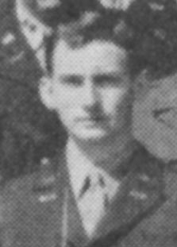

Boggs est un major de l'USAF travaillant au Pentagone de , où il joue un rôle important dans la réponse du renseignement de l'USAF aux premières manifestations ovnis post-guerre. Il fait plutôt partie du versant "analytique" de la communauté du renseignement plutôt que de celui de la "collecte" de données, qui avait commencé par traiter les signalements d'ovnis. Ce n'est que lorsque l'approche des ovnis se concentre à la base aérienne de Wright-Patterson et le projet Sign, et que le Pentagone commence à recevoir des retours du projet Sign qu'ils perçoivent que le phénomène ovni est réel et potentiellement extraterrestre que Boggs got assigned the job as the Pentagon focus point for what was going on, and what, if anything, should be the USAF response. Being on the "Defensive Air" side of Air Force intelligence analysis, and this being a possible enemy weapon and even a violation of US airspace, giving this job to someone in "Defensive Air" probably made sense. We should always remember, though, that all these Pentagon offices could work together on any problem; the location of their "desk" only fixes a "chain of command". When the projet Sign began hinting at a possible extraterrestrial "estimate" on UFOs, many in the Pentagon apparently thought that was unwise (to put it mildly), and Boggs was assigned (with consultancy from US Naval intelligence) to write an opposing estimate [AIR 100-203-79]. When the SIGN extraterrestrial estimate formally reached Director of Intelligence General Charles Cabell's office, there was a document to challenge it. This occasioned an actual intelligence "shoot-out" of sorts between the two camps held in at the NBS with Boggs defending his side against SIGN. SIGN lost that battle, and the idea that the USAF would proceed with the hypothesis that UFOs were extraterrestrial never was the leading theory again (This includes the "glory days" of , when although some persons in USAF intelligence thought that UFOs might well be ET, the organization certainly did not broadcast that as a primary hypothesis on any wider scale, as it would have been within the military if the SIGN estimate had prevailed). Post this meeting, it was generally Boggs' job to write Pentagon responses to things as they emerged in the now-negative Grudge era. Donald E. Keyhoe documents some of this in his Flying Saucers are Real. Ultimately Boggs moved on and this desk became the location of a much more UFO-friendly Dewey Fournet [after brief occupancy by a station-keeper].